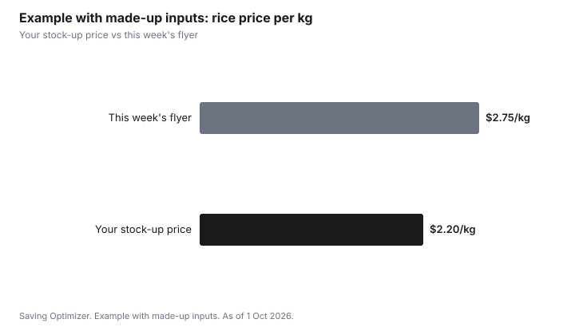

Food & Groceries · Canada
How to Keep a Simple Canadian Staple Price Book (So You Know a Real Deal)
A staple price book helps Canadian shoppers tell a real deal from a flyer headline. List the 15 to 25 groceries you buy most, write down the unit price (per kilogram, litre or 100 g) each time you see it at your stores, and mark the lowest price you have seen. That becomes your stock-up price: when a staple hits it, buy extra if you can store and use it before it spoils; otherwise buy only what you need.
Key takeaways
- Pick 15 to 25 staples you buy every month or two.
- Record the unit price, not the package price, plus the store and the date.
- After a few weeks, mark the lowest sale price you have seen. That is your stock-up price.
- Stock up only at or below that price, and only what you can store and use.
- Example with made-up inputs: rice at $2.20/kg in the book; a flyer at $2.75/kg is not a deal for you.
Set up the price book
- Choose your staples: pantry (rice, pasta, oats, canned tomatoes, flour), protein (eggs, chicken, beans), dairy, frozen vegetables, household items.
- Pick a tool: a spreadsheet, a notes app or a small notebook.
- Add columns: item, size, unit price, store, date, regular or sale.
- Record prices from receipts, flyers and shelf tags for a few weeks.
- Mark the lowest regular price and the lowest sale price for each item.
A simple template
| Item | Unit | Lowest regular (store) | Lowest sale (store) | Stock-up price |
|---|---|---|---|---|
| Rice | per kg | Your price | Your price | At or below lowest sale |
| Canned tomatoes | per 100 mL | Your price | Your price | At or below lowest sale |
| Frozen vegetables | per kg | Your price | Your price | At or below lowest sale |
| Eggs | per dozen | Your price | Your price | At or below lowest sale |
Use unit prices
Package sizes change, and a smaller package at the same price is a price increase. Comparing per kilogram, litre or 100 g keeps the comparison honest. Canadian shelf tags often show a unit price, but the unit can differ between items; convert to one unit in your book.
Use it with flyers, price matching and points
When the weekly flyer arrives, compare the sale price with your book. If it beats your stock-up price, it is a real deal for you; if not, skip it or buy just what you need. Price matching and loyalty offers can lower the effective price; record the price you actually paid after points only if you would earn them anyway.
Converting prices to one unit
Shelf tags in Canada may show unit prices per 100 g, per kg, per 100 mL, per L or per unit, and different products on the same shelf can use different units. Pick one unit per item in your book and convert. Divide the price by the package size in grams and multiply by 1,000 for a price per kg, or by 100 for a price per 100 g.
| Package | Price | Size | Price per kg |
|---|---|---|---|
| Rice, small bag | $4.50 | 2 kg | $2.25 |
| Rice, large bag | $18.00 | 8 kg | $2.25 |
| Oats | $4.20 | 1.35 kg | about $3.11 |
| Pasta | $1.75 | 900 g | about $1.94 |
Step by step: a weekly 10-minute routine
- When the flyers come out, open your price book next to the flyer app.
- Highlight any staple whose sale price is at or below your stock-up price.
- Check your pantry and freezer space before deciding how much to buy.
- Add those items to your list with the quantity and store.
- After shopping, enter the prices you actually paid from the receipt.
- Every few months, update your stock-up prices if regular prices have moved.
How much to stock up
Buy enough to last until the next likely sale, not a year's supply. Many staples go on sale every few weeks to every couple of months, and your book will show the pattern. Check best-before dates and storage needs: pantry staples keep well, frozen vegetables and meat need freezer space, and dairy and produce need to be used quickly. Stocking up only saves money if nothing is thrown out.
A price book also helps with price matching. At stores that match competitors' advertised prices, your book tells you which flyer prices are worth matching and which are not a real saving for you.
Common mistakes
- Tracking too many items and giving up after a few weeks.
- Comparing package prices instead of unit prices.
- Buying a large quantity at a 'sale' price that is above your stock-up price.
- Stocking up on items that spoil before you use them.
- Forgetting to update the book when prices rise overall.
Example with made-up inputs: is it a deal?
These numbers are an example with made-up inputs, not current prices.
| Item | Stock-up price in book | Flyer price | Verdict |
|---|---|---|---|
| Rice | $2.20/kg | $2.75/kg | Not a deal for you |
| Oats | $3.00/kg | $2.80/kg | Stock up |
| Frozen peas | $4.00/kg | $4.00/kg | Buy normally or stock up if space allows |

Sources
- Grocery unit pricing on shelf tags varies by retailer and province; check each store, as of 1 Oct 2026.
- The prices in the example table and chart are made-up inputs.
Frequently asked questions
What is a grocery price book?
A list of the staples you buy often, with the unit price you have seen at each store and date. It shows the lowest prices so you can tell a real deal.
How many items should be in a price book?
Start with 15 to 25 staples you buy every month or two. Add more only if you keep using it.
Should I record package price or unit price?
Unit price, such as per kilogram, litre or 100 g. Package sizes change, so unit prices keep comparisons fair.
What is a stock-up price?
The lowest sale price you have seen for an item. When a flyer reaches it, buy extra if you can store and use it in time.
How long before a price book is useful?
A few weeks of receipts and flyers usually shows the typical sale cycle for most staples.
How do I convert a price to price per kg?
Divide the price by the package size in grams and multiply by 1,000. For price per 100 g, multiply by 100 instead.
How much should I stock up when a staple is on sale?
Enough to last until the next likely sale, within your storage space and before the best-before date. Your price book shows how often each item goes on sale.
Should I use a spreadsheet or an app for a price book?
Either works. A spreadsheet is free and flexible; a notes app is handy in the store. Pick the one you will keep updating.
Which items belong in a staple price book?
Items you buy every month or two that keep well or that you use steadily: rice, pasta, oats, canned goods, flour, frozen vegetables, eggs, dairy and household basics.
Researched and drafted with AI assistance and fact-checked against official Canadian sources. How we create content.
Disclosure: Stores and apps are described as offer types; none is ranked. Saving Optimizer may earn a commission if a partner link is added later; no partnership is claimed. Education only.